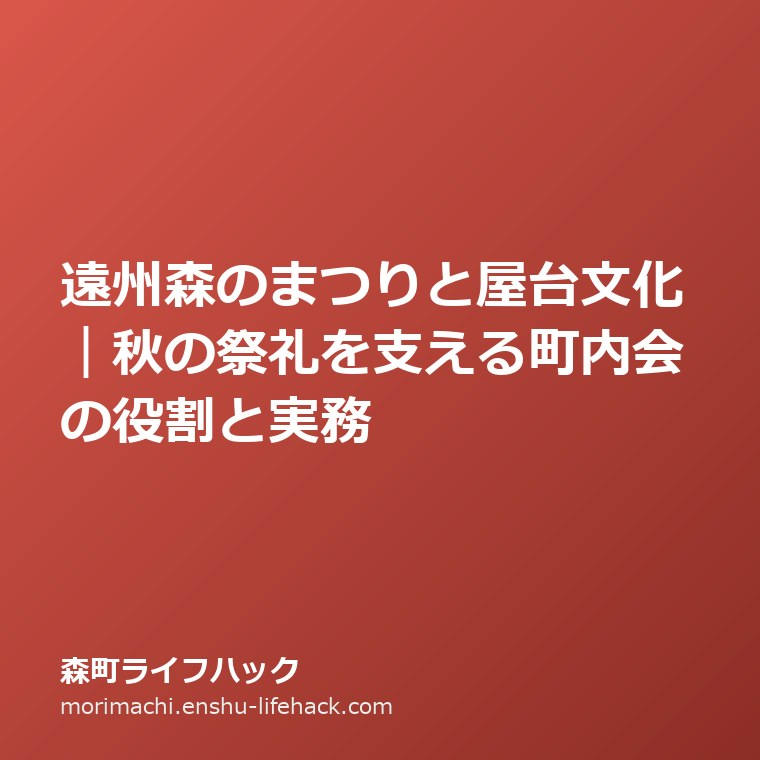

祭礼・イベント
遠州森のまつりと屋台文化｜秋の祭礼を支える町内会の役割と実務

この記事の要点
Q. 遠州森のまつりの屋台運行は誰が支えている？少子化の中でどう維持する？
A. 町内会・社寺総代・若衆組織が連携して14台の二輪屋台と囃子を守っています。町外出身者の参加や実家の滞在拠点化など、柔軟な工夫で伝統を引き継いでいます。
遠州森のまつりと屋台文化の歴史・暮らしへの影響
静岡県周智郡森町において、秋の訪れとともに町中が独特の熱気に包まれる行事があります。毎年11月上旬に開催される「遠州森のまつり（三嶋神社祭典）」です。遠州中央部に位置する森町は古くから秋葉街道の宿場町として栄え、「遠州の小京都」と称される豊かな歴史と文化を育んできました。
その歴史の精華とも言えるのが、町内を練り歩く14台の豪壮華麗な二輪屋台（山車）と、力強くも哀愁を帯びた祭り囃子です。笛と太鼓の音が山あいの町に響き渡ると、森町で生まれ育った人々はどれほど遠くに住んでいても故郷の土を踏みたくなる、と言われるほどの強い求心力を持っています。
この記事で整理したい最初の問いは、「遠州森のまつりと屋台文化は、どのような町内会組織と地域実務によって支えられており、少子高齢化が進む中山間地域において、伝統行事の継承と実家の関わりをどう捉えるべきか」です。
結論を先に申し上げれば、森のまつりは単なる観光イベントではなく、自治会・町内会、社寺総代、そして若衆組織（青年会）が三位一体となって一年がかりで準備・運営する地域自治の結晶です。少子化によって担い手が減少する現在、町外に住む出身者や親族を積極的に受け入れ、実家や空き家を帰省・滞在の拠点として活用しながら持続可能な仕組みを再構築していくことが、森町のコミュニティを守る決定打となります。
しかし、祭礼の現場には花代（寄付金）の負担、屋台の運行安全管理、会所の設営、さらには「実家を空き家にしたが、祭りの寄付や役員はどうすればよいか」といった切実な悩みも存在します。
本稿では、森町の町史資料や観光公表情報から読み取れる歴史的事実を整理したうえで、宅地建物取引士の視点から、祭りと不動産・実家管理を結ぶ実践的な知恵を詳しく解説します。

森町の屋台の最大の特徴は、一般的な四輪の山車とは異なり、巨大な木製車輪を二輪備えた「遠州型二輪屋台」である点です。釘を極力使わずに組み上げられた総欅（けやき）造りの車体に、名工の手による繊細な彫刻と重厚な漆塗りが施されています。車輪の心棒には強靭な樫（かし）材が用いられ、左右の車輪の回転差を利用して狭い直角の辻を勢いよく曲がる「手木（てぎ）さばき」の迫力は、見物客を圧倒します。
現在、森地区には14の町内（社）が存在し、それぞれが独自の屋台を所有しています。各町内には「慶雲社」「明開社」「鳳雲社」といった歴史ある社名が冠されており、屋台ごとに意匠の異なる天幕や彫刻が飾られています。
祭典の期間中、屋台は昼夜を問わず町内の狭い街道を曳き廻されます。二輪屋台特有の「上下に激しく揺れながら進む動き（練り）」は圧巻であり、若衆たちが呼吸を一つにして屋台を操る技術は、長年の鍛錬によって受け継がれてきた職人技そのものです。
また、森のまつりで演奏される「祭り囃子」も特筆すべき無形文化遺産です。「大間（おおま）」「宮昇殿（みやしょうでん）」「矢車（やぐるま）」など多彩な曲目があり、笛の甲高い音色と太鼓の重低音が織りなす旋律は、遠州一帯の祭り囃子の源流の一つとして高く評価されています。
これらの神事と屋台運行は、三嶋神社の神輿が御旅所へ向かう神幸祭（渡御）と、本宮へ戻る還幸祭（還御）という厳格な神事儀礼に沿って執り行われており、単なる祝祭を超えた宗教的・歴史的な規律を持っています。
運行にあたっては、各町の青年層で組織される「若衆」が前面に立ち、年長者である「相談役」や自治会長が後方支援と安全統括を担うという、世代間リレーの組織体系が確立されています。
このように、森のまつりは数百年にわたる地域の歴史、木工・彫刻・漆塗りの工芸技術、音楽、そして地域自治組織が一体となった総合的な地域遺産なのです。
公式資料に記された祭礼の重みを、森町で暮らす住民や実家を持つ家族の日常生活に引き寄せて考えてみましょう。
森のまつりが開催される森地区の中心街（遠州森駅周辺から本町、新町周辺）では、祭りの期間中は大規模な交通規制が敷かれ、主要な道路が歩行者天国や屋台運行専用路となります。路線バスの迂回運行や自家用車の通行止めが発生するため、日常の買い物や通院には事前の計画が不可欠です。
一方、飯田・園田・一宮といった南部平野部や、天方・三倉といった北部中山間集落においても、それぞれ独自の秋祭りや神社の祭礼（舞楽奉納など）が行われています。しかし、中心街の「森のまつり」は町全体から多くの人が集まるため、町内全域の移動動線に影響を与えます。
特に、実家を離れて浜松市や磐田市、あるいは東京などの都市部で暮らす子ども世代にとって、11月の森のまつりは「年に一度、必ず実家へ帰省する日」として機能してきました。
普段は静まり返っている実家に子どもや孫が集まり、手料理を囲み、家の前を通過する屋台に手を振るという時間は、家族の絆を再確認する貴重な機会です。
しかし近年、実家が完全な空き家になってしまったご家庭からは、「祭りの寄付金をどう納めればいいのか」「空き家なのに町内会の祭典役員が回ってきたらどうしよう」という戸惑いの声も多く聞かれるようになっています。
伝統行事への参加と、空き家となった実家の維持管理の狭間で、多くの家族が悩んでいるのが現代の森町のリアルな姿です。

良い点と注文したい点：圧倒的な地域結束と担い手不足の課題
森のまつりが持つ最大の美点は、世代を超えた「圧倒的な地域結束力」を育む装置として機能していることです。
現代社会では、核家族化や地域の人間関係の希薄化が進み、子どもから高齢者までが一同に会して共通の目標に向かって汗を流す機会は激減しています。その中で、森町の若者たちが何ヶ月も前から集まって囃子の練習を重ね、屋台の整備を行い、先輩から後輩へと伝統の所作を受け継いでいく姿は、地域コミュニティの最も健やかな形を示しています。
第二の良い点は、町外へ出た若者たちを引き戻す強力な求心力です。「祭りの太鼓の音が聞こえると血が騒ぐ」と語る出身者は多く、祭りをきっかけに帰省し、地元の友人や親族と旧交を温めることで、森町に対する誇りと愛着が生涯にわたって維持されます。
第三に、本物の伝統工芸と文化財に日常の中で触れられる教育的価値です。博物館のガラスケースの向こう側にあるべき漆塗り彫刻屋台が、現役の乗り物として町を疾走する光景は、森町の子どもたちにとってかけがえのない情操教育となっています。
一方で、持続可能な森町の未来を見据えたとき、率直に改善を求めたい注文点も存在します。
第一に、少子高齢化に伴う「若衆・担い手不足」と「個人の負担増」です。かつては各町内に数十人の若者がいて自然にローテーションが組めていましたが、子どもの数が減った現在、少数の若者や中高年層に過度な運行負担がかかっています。怪我や事故を防ぐためにも、無理のない運行時間への見直しや、近隣町内同士の応援体制の構築が急務です。
第二に、寄付金（花代）の集金における経済的負担感です。高齢者だけの年金世帯や、実家を相続して遠方に住む所有者に対して、従来通りの高額な寄付を一律に求めることは、住民の定住や実家維持への重荷になりかねません。寄付金額の目安を柔軟にし、透明性の高い会計報告を行うことが求められます。
第三に、移住者や新住民に対する参加のハードルの高さです。代々の地元民で構成されてきた歴史があるため、新しく森町に移り住んできた人が「祭りにどう関わればいいのか分からない」「仲間に入りにくい」と感じてしまう場面があります。オープンな参加窓口を広げることが不可欠です。
対案・結論と大石の視点：実家・空き家を活用した持続可能な地域モデル
森のまつりの伝統を守りつつ、住民や実家所有者の負担を減らすための対案として、以下の3つのアプローチを提案します。
ステップ1は、「参加資格の柔軟化と関係人口の受け入れ」です。町内在住者だけでなく、森町出身者、町外の親戚、さらには森町の文化に共感するファンを正式な担い手として迎え入れる仕組みを整えます。すでに一部の町内で始まっている柔軟な登用を全町へ広げることで、若衆の頭数を確保し安全運行を担保できます。
ステップ2は、「実家・空き家を祭りの滞在拠点として再生すること」です。年に一度の祭りに合わせて遠方の家族が帰省し、数日間滞在することで、空き家の通風や清掃が行われ、建物の劣化を防ぐことができます。さらに、空いている部屋を町外から応援に来る若衆の宿泊・休憩所として提供すれば、地域への大きな貢献にもなります。
ステップ3は、「寄付・協賛のクラウド化とファンコミュニティの形成」です。紙の集金袋だけでなく、オンラインでの協賛金募集やふるさと納税を活用した屋台修繕基金の設立など、現代的な資金調達を取り入れることで、地元住民の肩の荷を軽くすることができます。
宅地建物取引士として森町の不動産相談を受けていると、「祭りが盛んな地域は、人が離れにくい」という法則を強く実感します。
ただ便利なだけの新興住宅地は、建物が古くなると一斉に人が去ってゴーストタウン化するリスクがあります。しかし、森町のように「ここでしか味わえない祭りや伝統文化」が息づいている地域は、一度町を離れた子どもたちが定年後や子育て期に戻ってきたり、伝統に魅了された移住者が古民家を再生して住み始めたりする好循環が生まれます。実家の空き家管理においても、「祭りの日に家族が集う場所」という明確な目的があるだけで、建物の換気や雨漏り修繕、庭木の剪定を定期的に行う強力な動機づけになります。
遠州森のまつりを守ることは、単に昔の習慣を維持することではなく、森町の土地と住まいのブランド価値を長期的に支える最強の地域資源を守ることなのです。
家族に残す記録とまとめ：祭り半纏の管理と伝統の継承
森町に実家があるご家庭では、祭りの前後に家族で確認しておくべき実務ポイントがあります。
具体的には、「先代が大切にしていた祭り半纏や提灯の保管状態」「親族が宿泊する際の寝具や給湯器の作動確認」「祭典期間中の駐車スペースの確保」「不在時の空き家の施錠と火の元確認」の4点です。
特に祭り半纏は、各町内の紋章が入った大切な家族の遺産です。防虫剤を入れて大切に保管し、次の世代の子どもや孫に受け継ぐことで、家族のルーツが自然と語り継がれていきます。
また、祭りの時期に合わせて空き家となった実家へ親族を迎える際には、事前の建物メンテナンスが欠かせません。数ヶ月締め切っていた住宅では下水の封水が切れ、室内に異臭が充満していることがあります。到着したらまず全ての蛇口を開けて通水し、排水トラップに水を溜めることが快適な滞在の第一歩です。
加えて、畳の部屋の窓を全開にして秋の乾燥した空気を送り込み、押し入れの布団を天日干しにしておくことで、遠方から帰省した家族が気持ちよく夜を過ごすことができます。分電盤のブレーカーの容量確認や、給湯器の試運転も前日までに済ませておくことがトラブルを防ぐ秘訣です。
さらに、祭りの混雑に乗じた空き巣被害を防ぐため、留守にする時間帯の雨戸の施錠やセンサーライトの設置など、防犯面の備えも忘れてはなりません。
運行安全の観点からも、狭い街道沿いに実家があるご家庭では、敷地先から道路へはみ出している植栽の枝打ちや、置き看板・自転車の移動など、屋台が安全に通過できるように事前の道路環境整備に協力することが町内への大きな貢献になります。
遠州森のまつりと二輪屋台文化は、過疎化が進む中山間地域において住民が誇りを分かち合い、世代をつなぐ希望の光です。
時代に合わせて形を少しずつ進化させながら、無理のない形で伝統のバトンを未来へ渡していくことが、今を生きる私たち実務家と住民の共通の使命です。
今年の11月、秋の澄んだ空気の下で威風堂々と街道を進む森町の屋台を、ぜひご自身の目で確かめてみてください。
- 森のまつりは14台の精緻な二輪屋台と独特の祭り囃子が街道を練り歩く三嶋神社の伝統祭礼である。
- 自治会・社寺総代・若衆が連携して運営しており、町外出身者の帰省と世代間交流の強力な核となっている。
- 担い手不足や費用の課題に対しては、町外人材の登用や空き家の滞在拠点化など柔軟な工夫が求められる。
よくある質問（FAQ）
森のまつりはいつ開催されますか？誰でも見学できますか？
毎年11月の第1金曜日・土曜日・日曜日の3日間に開催されます。街道沿いからの屋台見学や祭り囃子の鑑賞はどなたでも自由に行えます。
屋台の運行に参加するには町内に住んでいなければなりませんか？
基本は町内（社）の若衆が中心ですが、少子化に伴い出身者や親戚、外部サポーターを柔軟に受け入れる町内が増えています。
実家が空き家の場合、祭りの寄付（花代）はどうすればよいですか？
居住していない場合の寄付金額や役員の免除規定は各町内会の内規によります。事前に自治会長や組長へ相談することをお勧めします。

磐田市見付で不動産業と高齢者介護事業を営む実務家。周智郡森町の実家じまい・空き家相談・農地山林の引き継ぎを一軒ずつ受けています。公式資料を必ず自分の足と目で確認してから書くことを徹底しています。プロフィール詳細
参考にした公式情報
- 遠州森のまつり／静岡県森町公式（2026年9月12日確認）
- 森町の指定文化財一覧／静岡県森町公式（2026年9月12日確認）
最終確認日：2026-09-12 ／ 本記事は公表情報と執筆者の見解を分けて記載しています。祭典日程や運行順路、交通規制は変更される場合があるため、最新情報は森町観光協会や森町公式窓口でご確認ください。